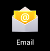
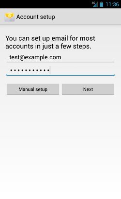
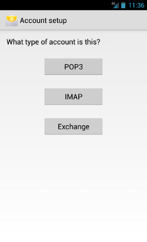
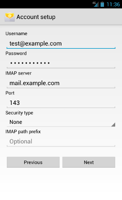
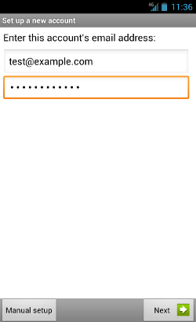
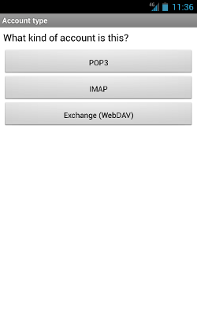
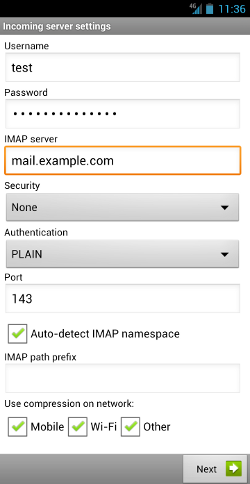

Just Select How You Want to Access Your Email! ↑
- Tap "Settings" app
- Tap "Mail, Contacts, Calendars"
- Tap "Add Account..."
- Tap "Other" (bottom option)
- Tap "Add Mail Account"
- Enter Name, address (full email user@thenu-congroup.com), and password.
(iPhone will attempt to guess your settings. Allow ~1 minute for it to fail.)
- Select IMAP. - (It's the default. The option you've selected will be highlighted blue.)
- Under "Incoming mail server"
- Set "hostname" to www.thenu-congroup.com
- Set "username" to email@thenu-congroup.com
- Set "password" to your password
- Under "Outgoing mail server"
- Set "Host name" to www.thenu-congroup.com
- Set "User name" to email@thenu-congroup.com
- Set password to your passwor
- Message "Cannot Verify Server Identity" may appear (twice)
- Tap "Continue"
You are now ready to send and receive emails via your iPhone!
Using the Default Email Client
- Open your email client.

- Enter your full email address and password, as pictured below.

- Select IMAP for your account type.

- On the final account setup, enter the following information:
- Username - The email address you are trying to connect to
- Password - The password to that email address
- IMAP server - www.thenu-congroup.com
- Port - 143
- Security Type - None
- IMAP path prefix - Leave blank

- Click Continue and the email client will check your settings and connect to your account.
Using K-9 Mail
- Open the Google Play Store.
- Find, install and open K-9 Mail.

- Enter your full email address and password, as pictured below.

- Select IMAP for your account type.

- On the final account setup screen, enter the following information:
- Username - The email address to which you are trying to connect
- Password - The password to that email address
- IMAP server - www.thenu-congroup.com
- Port - 143
- Security Type - None
- IMAP path prefix - Leave blank

- Click the Continue and the email client will check your settings and connect to your account.
Using Outlook 2010
- Open Outlook 2010.
- Click on the File menu.
- Click Add Account.
- On the Auto Account Setup page, your name and email address will auto populate based on how you've logged into your computer. If these settings are correct, click Next.
- If the auto-populated information is incorrect, then you have two options:
- Go back to the Auto Account Setup page and correct the settings.
- Reset the options on the Auto Account Setup page by clicking the Option button next to Manually configure server settings and then clicking the Option button next to Email Accounts.
Outlook will then perform an internet search to automatically find your email server settings.
- When prompted, provide the full email address and password for the email account being configured.
- You will be informed that the setup is complete. Click Finish to finalize the process.
------
Rio & Carlos